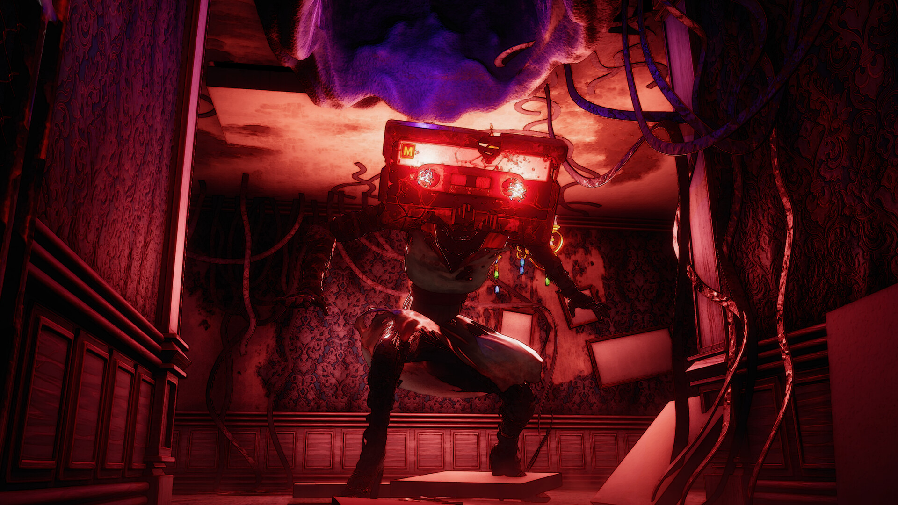
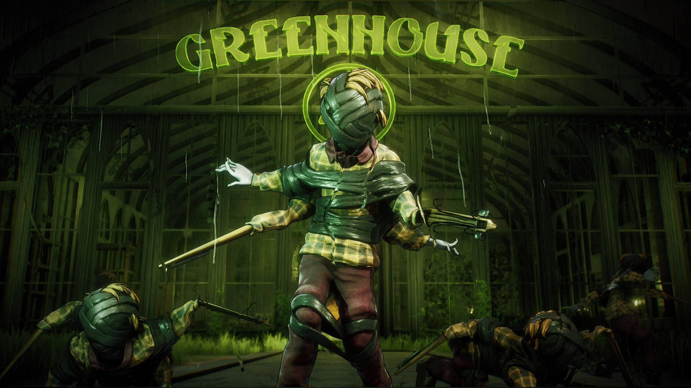
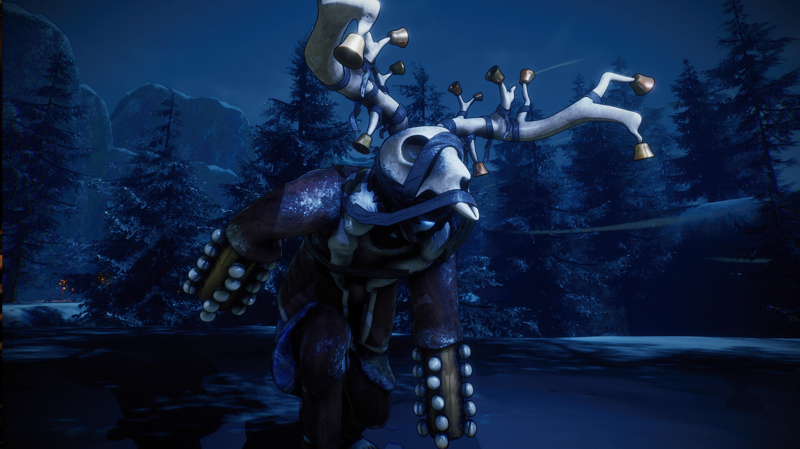

This is the project that has taken up most of the last three years of my pipeline, which is a big reason the rest of this stretch of my portfolio looks lighter than I want it to.
My work on Don't Fret has covered character modeling, design tweaks, retopology, optimization, and high poly sculpting. It has been a huge chunk of my recent growth, so I wanted it sitting right at the top instead of feeling like a gap.
Long-term production work across character builds, cleanup passes, and sculpting polish.
A major recent project that better explains where my time and energy have been going.
The clearest snapshot of the kind of stylized horror work I want more of in my portfolio.
Don't Fret key artScary Kid Studios / Digital Pajamas
Project Preview
A few official preview shots are here now so the project feels real on the site instead of hidden behind one banner and a store widget.

Official preview still from the current Steam page.

Another project preview while the full breakdown section is still growing.

More atmosphere from the game so the page carries some real weight.
More model sheets, turnarounds, and process shots can slot into this page next without changing the layout again.
What I Touched
Character modeling from concept into production-ready meshes.
Design tweaks to help characters land better in 3D.
Retopology and optimization work so the assets are usable in-game.
High poly sculpting passes where the forms really start to sing.
Steam Page
The official Steam widget is still here for anyone who wants the store page, trailer, and wishlist button right away.